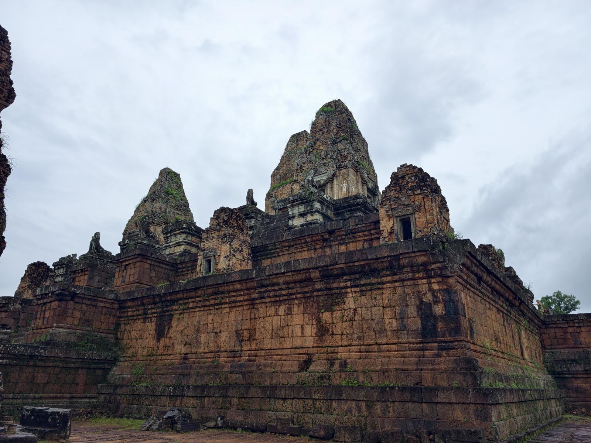
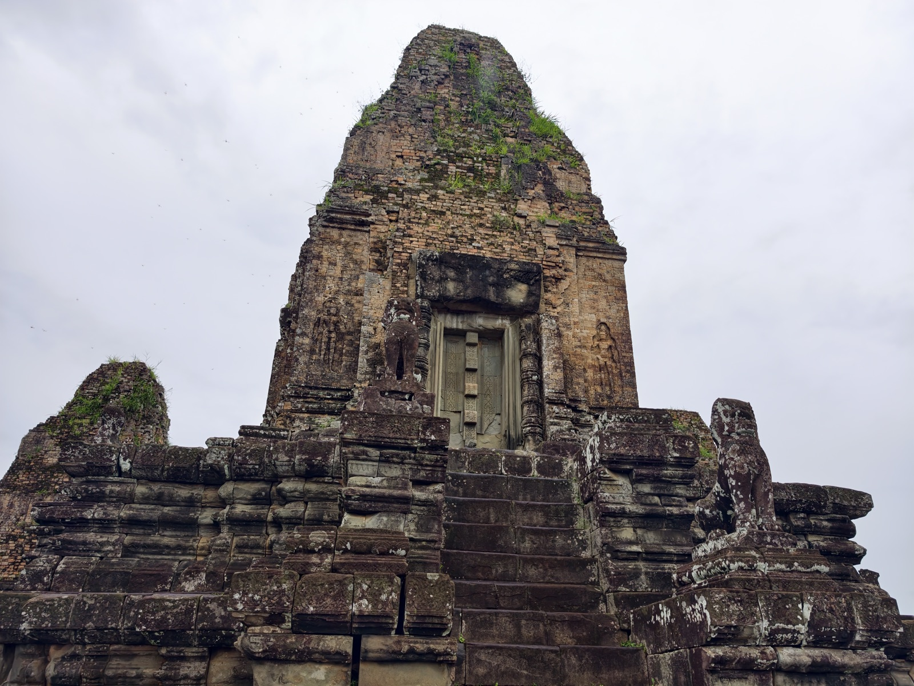
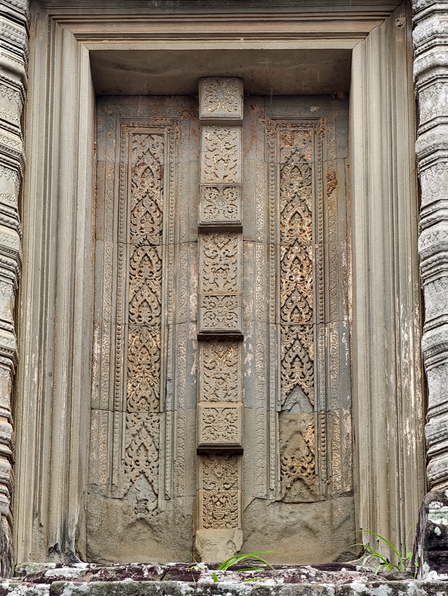
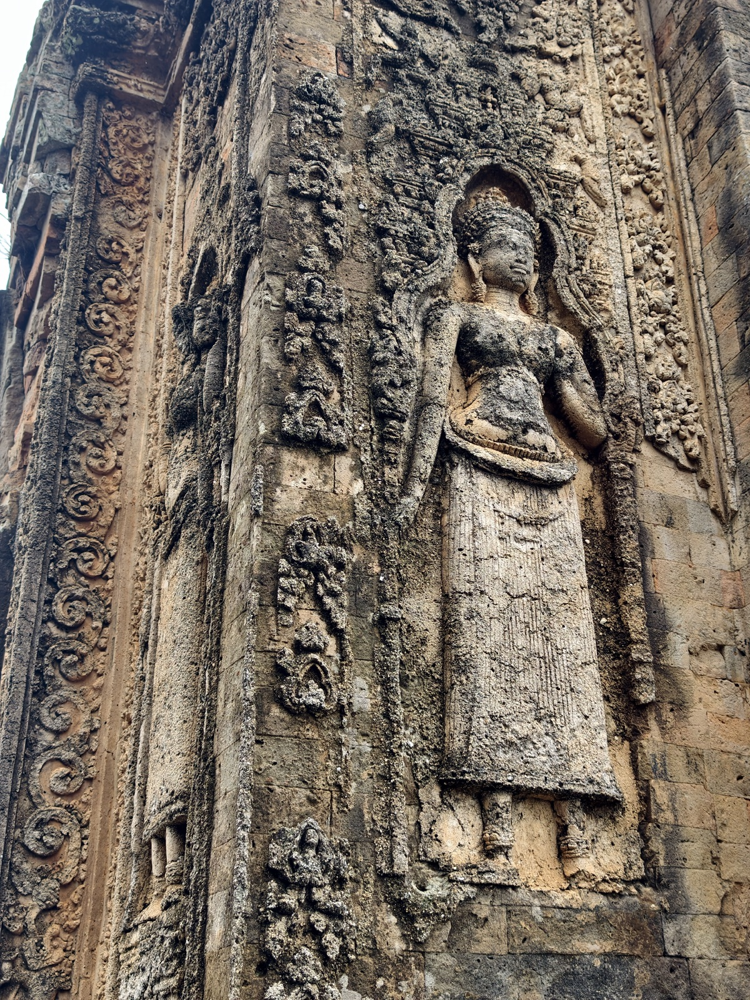
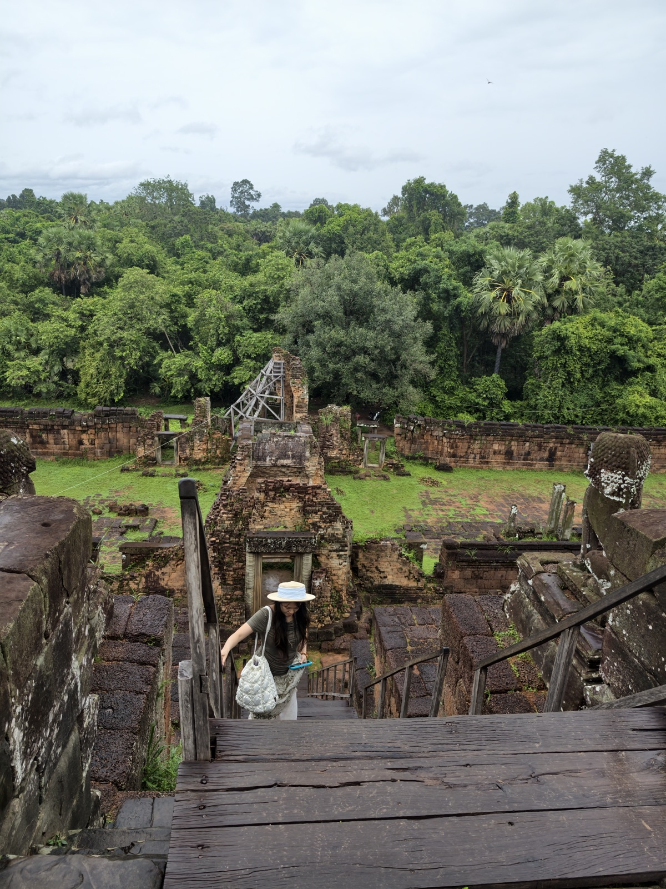

变相寺
很不一样的红砖金字塔风格。这里是皇家的火葬场。

变相寺建于十世纪中叶，是罗贞陀罗跋摩二世的国庙，比吴哥寺早了一百多年。红砖砌塔、红土垒基，门饰与窗框才用砂岩——远远看去，整座庙是一种烧过的颜色。「变相」这个名字正合它的用途：皇家在这里举行火葬，肉身在此化作另一种存在。




很不一样的红砖金字塔风格。这里是皇家的火葬场。

变相寺建于十世纪中叶，是罗贞陀罗跋摩二世的国庙，比吴哥寺早了一百多年。红砖砌塔、红土垒基，门饰与窗框才用砂岩——远远看去，整座庙是一种烧过的颜色。「变相」这个名字正合它的用途：皇家在这里举行火葬，肉身在此化作另一种存在。



